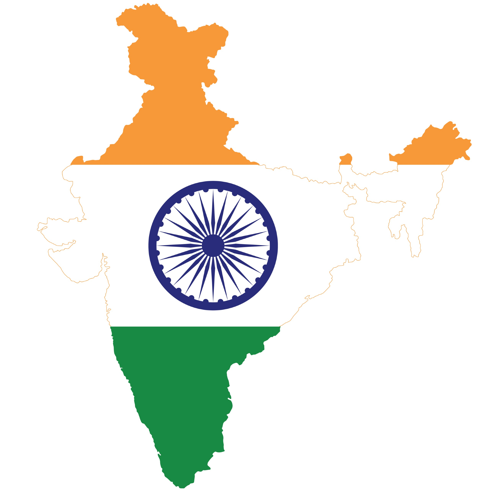
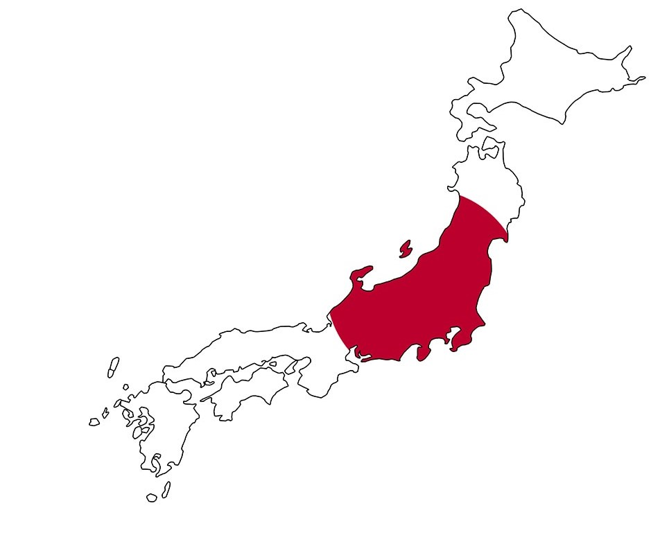

Select the country from the below list.
Interested in any specific country? Go ahead and explore all the festivals and important days celebrated there along with a well curated set of movies that will set just the right tone for you. We believe that a good movie will be a great start to the holiday!
USA
 US movies
US movies
India
 India moviesChina

China movies
UK
UK movies
Japan
Japan movies
Upcoming events in each country
Each country is looking forward to many glorious festivals and events! Movies usually help us feel like the holidays are arriving and helps us get immersed in the festivals. Below are the upcoming festivals from each country.
- USA-New Year (1st January)
- India-Republic Day (24th January)
- China-The Double Ninth Festival (4th October)
- UK-Halloween (31st October)
- Japan-Karatsu Kunchi Festival Saga (2nd November)